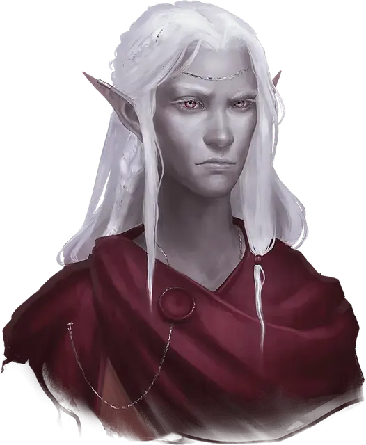

Галсариад Ардит (1-го уровня)
Galsariad Ardyth (Tier 1)
Средний Гуманоид (Волшебник, Дроу, Эльф), нейтральный, именной НИП

Класс Доспеха 12 (15 с доспехом мага)
Хиты 49 (14к8 - 14)
Скорость 30 футов
| мод | спас | ||
|---|---|---|---|
| СИЛ | 8 | −1 | −1 |
| ЛОВ | 14 | +2 | +2 |
| ТЕЛ | 8 | −1 | −1 |
| мод | спас | ||
|---|---|---|---|
| ИНТ | 16 | +3 | +5 |
| МДР | 15 | +2 | +4 |
| ХАР | 12 | +1 | +1 |
Навыки Магия +5, Природа +5, Расследование +5
Чувства тёмное зрение 120 футов, пассивное Восприятие 12
Языки Общий, Драконий, Подземный
Опасность 3 (700 опыта)
Бонус мастерства +2
Особенности
Наследие фей. Галсариад совершает с преимуществом спасброски от очарования, и магия не может его усыпить.
Действия
Иссушить потенциал. . Рукопашная или Дальнобойная атака заклинанием: +5 к попаданию, досягаемость 5 футов или дистанция 30 футов, одно существо. Попадание: 16 (3к10) урона некротической энергией, и Галсариад получает 5 временных хитов.
Гравитационная волна (Перезарядка 5–6). Галсариад вызывает пульсирующую волну магической гравитации, заполняющую сферу радиусом 10 футов с центром в точке, которую он видит в пределах 120 футов. Каждое существо в этой области должно совершить спасбросок Силы Сл 13. При провале существо получает 17 (5к6) урона силовым полем и притягивается на 10 футов к центру сферы. При успехе существо получает половину этого урона и не притягивается.
Использование заклинаний. Галсариад может накладывать следующие заклинания, используя Интеллект в качестве базовой характеристики (Сл спасброска от заклинания 13):
• Неограниченно: доспехи мага [mage armor], волшебная рука [mage hand];
• 1/день: скороход [longstrider].
Бонусные действия
Искажение гравитации (1/день). Галсариад нацеливается на себя или на одно согласное существо, которое он может видеть в пределах 60 футов, магическим образом искажая гравитацию вокруг цели. Любое существо в радиусе 5 футов от цели получает 3 (1к6) урона силовым полем. Кроме того, цель может использовать реакцию, чтобы всплыть вверх, на высоту до 20 футов, не провоцируя атак. Когда этот эффект заканчивается в начале следующего хода Галсариада, цель плавно спускается на высоту до 20 футов.
Описание
Красивый, неземной, смертоносный, призрачный — все это точно описывает Галсариада Ардита, дроу на его двухсотом году жизни. Недавно он начал изучать тайную магию и ведет жизнь искателя приключений в надежде улучшить свою репутацию в династии Крин. Болтливый, язвительный и саркастичный до безобразия, он готов к колкости по любому поводу — обычно для того, чтобы скрыть собственную неуверенность.
Житель города Росона, столицы Династии Крин, Галсариад наделен острыми эстетическими чувствами и интересом к древним знаниям, особенно к истории, касающейся Эпохи Арканума, давно утраченного магического золотого века Экзандрии. Он также самый новый член группы соперников, и Айо, и Ирван впечатлены его неземной элегантностью — и немного влюблены в него, даже если он слишком много болтает.
Галсариад ценит людей, которые разделяют его интересы и готовы проводить время, занимаясь с ним, хотя ему также нравится, когда люди относятся к нему с уважением, даже если их не интересует магия. Он не любит людей, которые хранят от него секреты, и ненавидит, когда люди осуждают его за то, что он новичок в магии, хотя ему уже несколько столетий.
Примеры высказываний в бою
"Тебе еще многому нужно научиться". "А я-то думал, что у тебя есть какой-то талант". "Следующим заклинанием я лишу тебя всякой надежды на победу".
Уровни Соперников
По мере того, как персонажи повышают свой уровень и получают новое снаряжение в ходе этого приключения, соперники набирают силу. Каждый соперник представлен тремя блоками характеристик.
СОПЕРНИКИ 1-го уровня
Соперники 1-го уровня - это неоперившиеся авантюристы, которые получили немного сил благодаря своим индивидуальным подвигам еще до начала этого приключения. Они стремятся написать свою собственную великую историю.